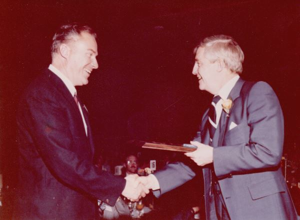
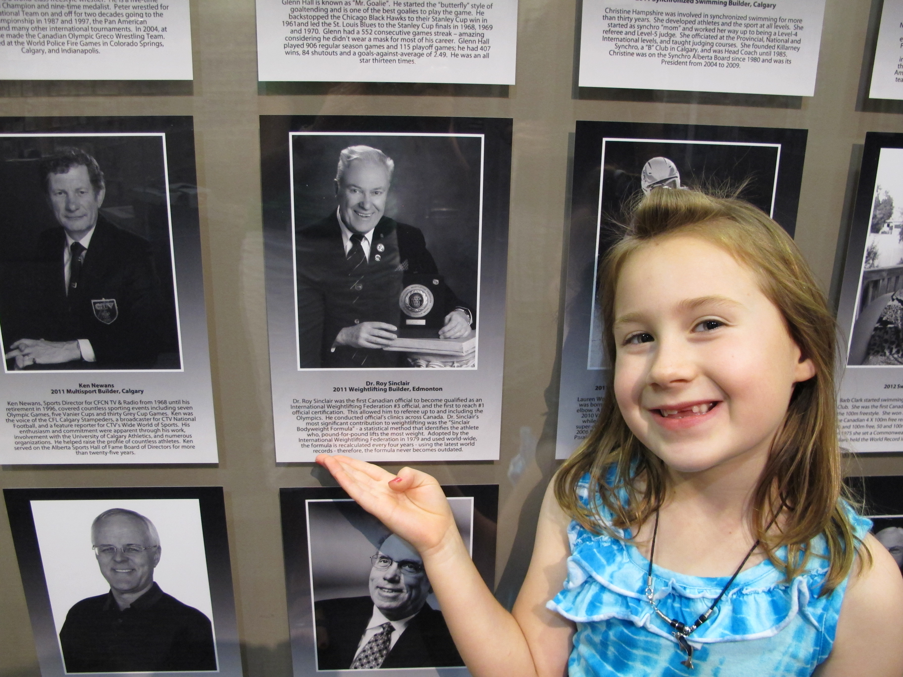
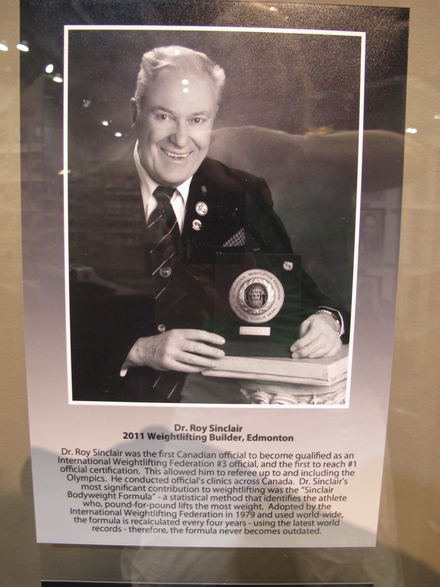
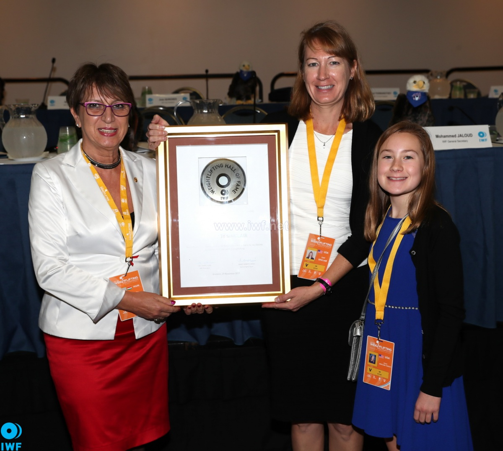
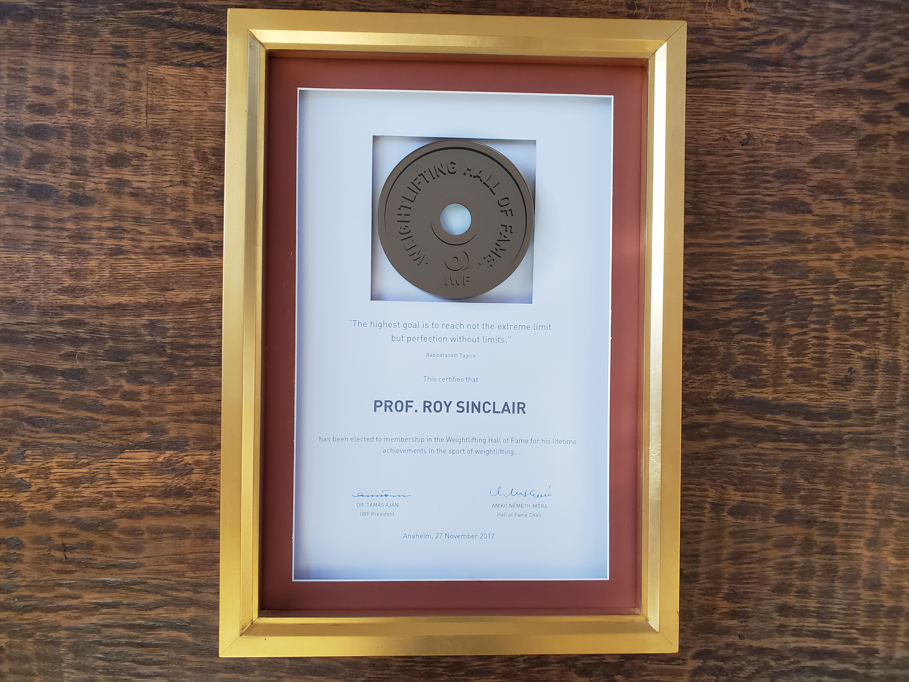

Recognition
- In 1980, the Premier of Alberta, Peter Lougheed, presented him with the Alberta Achievement Award in recognition of the IWF adopting his weightlifting formula.
- In 2011, he was inducted into the Alberta Sports Hall of Fame for his many contributions to weightlifting.
- Sinclair Formula
- President of Alberta Weightlifting Federaton
- Canadian Weightlifting Federation Official
- First Canadian to become an International Weightlifting Federation #3 official
- First Canadian to reach #1 official certification which qualified him for Olympics
- In 2017, the International Weightlifting Federation (IWF) inducted him into the Weightlifting Hall of Fame for his lifetime achievements in the sport of weightlifting

 
 